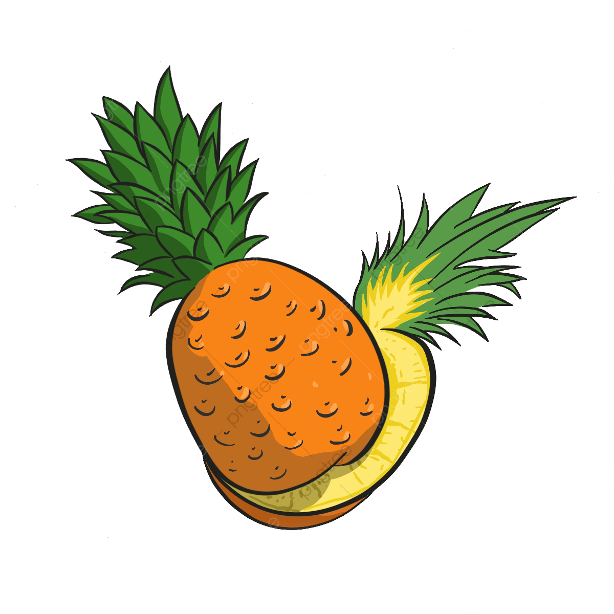

Fresh Life
El sistema Fresh Life será una página diseñada y enfocada para crear unos mejores hábitos de alimentación en nuestros usuarios permitiéndoles el poder alimentarse mejor con productos que tengan a su disposición o mediante pedidos que nuestra página facilitara a los usuarios y ayudará a conocer más restaurantes que ofrecen una mejor alternativa al momento de alimentarse
- 
-